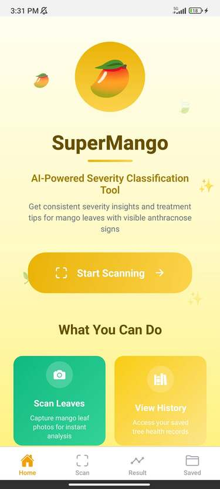
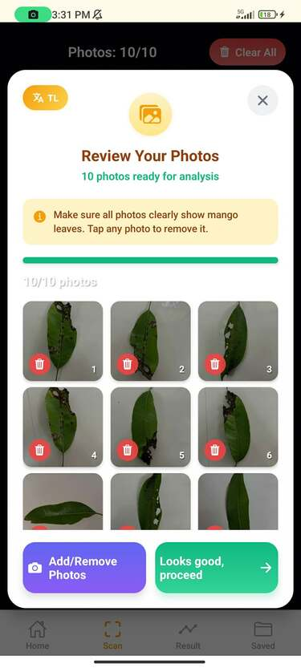
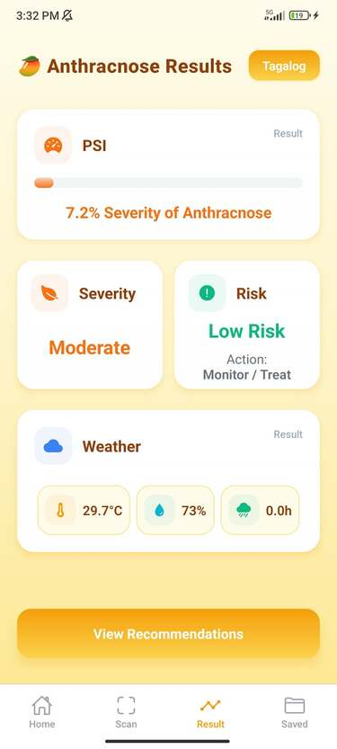
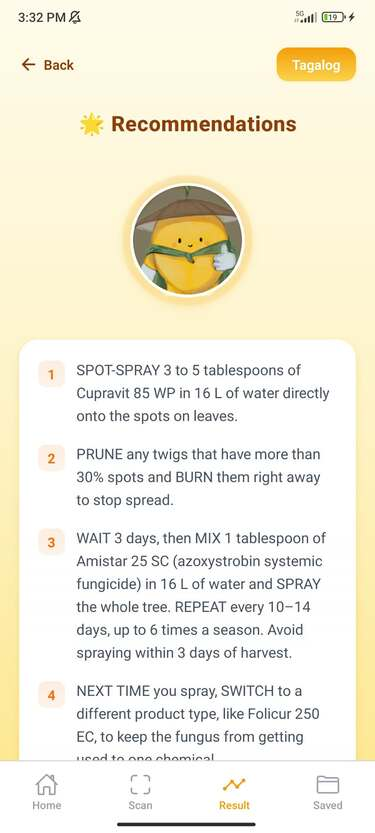

Project Overview
SuperMango is an innovative mobile application that leverages artificial intelligence and machine learning to help farmers identify and classify the severity of mango diseases. By simply taking a photo of a mango leaf or fruit, farmers can quickly diagnose problems and take appropriate action to protect their crops.
📅 Duration
4 months (Jul - Oct 2024)
👥 Team Size
Team of 4
🎯 Purpose
Agricultural Innovation
🏆 Achievement
Hackathon Winner
Key Features & Functions
AI-Powered Image Recognition
- Capture or upload photos of mango leaves/fruits
- Real-time disease detection using computer vision
- Trained on thousands of mango disease images
- High accuracy classification (95%+ accuracy)
- Works offline after initial model download
Severity Classification
- Classifies disease severity: Mild, Moderate, Severe
- Detailed analysis of affected areas
- Percentage of damage estimation
- Disease progression tracking over time
- Early warning system for rapid spread
Treatment Recommendations
- Personalized treatment suggestions
- Organic and chemical treatment options
- Step-by-step application instructions
- Preventive measures and best practices
- Cost-effective solution recommendations
Disease History & Analytics
- Track all scanned mangoes and their conditions
- Historical disease data visualization
- Seasonal pattern analysis
- Farm-wide health monitoring
- Export reports for agricultural consultants
Knowledge Base & Community
- Comprehensive disease information library
- Expert tips and farming best practices
- Community forum for farmer discussions
- Local agricultural expert connections
- Multilingual support for accessibility
App Mockups & Demo
Explore the SuperMango mobile app interface and see how farmers use AI to protect their mango crops.




Video Walkthrough
Watch how SuperMango helps farmers identify and treat mango diseases in real-time.